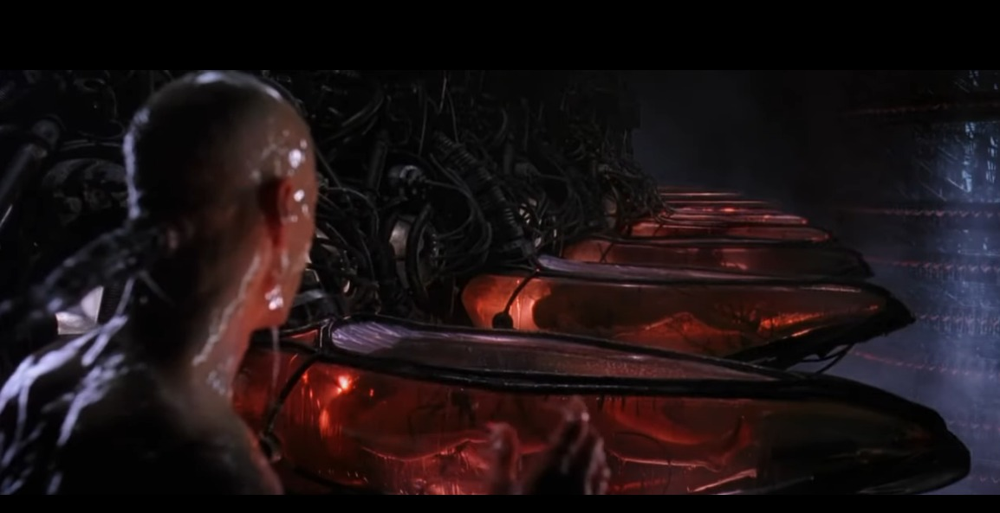

「真実の世界」とは何か？
 (image source : "The Matrix", movie film)
原題：Mike Clelland : 日常的認識を超えた「真実の世界」が存在する
手抜き
・Q) 様々な神秘的な現象の奥に含まれている核となるメッセージは何か？ ・A) 我々の日常的認識を超えたリアリティ（＝真実の世界）が存在する…という事だろう。音声書写（自動生成）
▼展開
Q) what what do you think if any and you're 109:49 speculating 109:50 is there a main message behind 109:53 all this stuff paranormal stuff that's 109:55 happening 109:57 A) i would say the main 110:29 message is that there 110:30 is a deeper reality beyond this 110:33 reality here like this reality here with 110:36 the hard table and the 110:38 you know the clock ticking one second at 110:40 a time 110:42 there's something grander just beyond 110:46 our our available perception 110:48 and and that i mean that's where you get 110:52 the question of what is god you know 110:53 where you know what's our purpose what's 110:55 so yeah i'm i'm um 110:59 GC: it's almost like you've stolen jacques 111:01 ballet's message it's a giant kabuki 111:03 theater 111:04 and the only message is we're not alone 111:06 that something's going on 111:07 MC: yeah yeah so i mean it's once again the 111:10 i can't understand the 111:12 agenda of the people behind the you know 111:14 like the grand chess player 111:16 you know the kabuki theater puppeteer um 111:19 but i can say that it's that something's 111:21 happening 111:22 and and then maybe when we die we'll be 111:25 enlightened and we'll understand it all 111:27 or 111:28 so but for now we're stuck here we can 111:34 tickle the corners of it but we'll never 111:36 know it completely so yeah動画（1:54:44）
GRANT CAMERON with Mike Clelland, on OWLS, Synchronicities and the Paranormalコメント
・Mike Clelland もそうだが、この動画の参加者（Grant Cameron, Mike Clelland, Nicole Sakach）の誰もが ・日常的認識を超えた「真実の世界」が存在し、 ・直観的洞察や神秘的な認識力によってのみ把握できる と確信している。で、その「真実の世界」とは何か？ それはとてもシンプル。一言で言える。この日常世界がソレ。 ・この日常世界こそが「真実の世界」であり、誰もが信じている「日常的認識を超えた「真実の世界」」など逆立ちした観念が生み出した妄想でしかない。 (2021-07-13)
初出
Mike Clelland : 日常的認識を超えた「真実の世界」が存在する (2021-07-13)